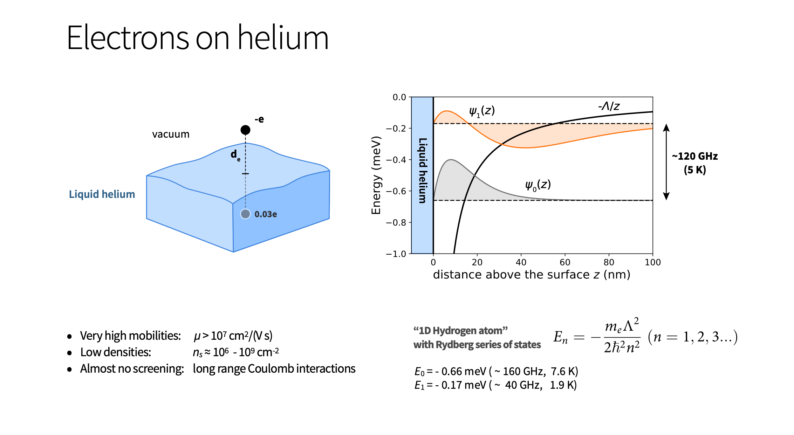
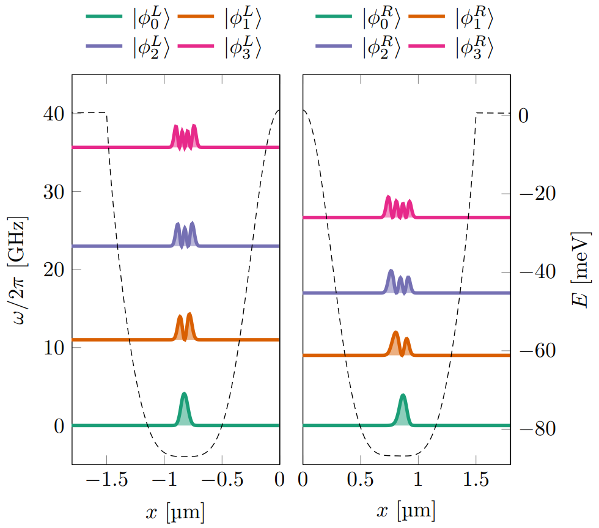

Quantum Computing Lectures for Nano and Quantum Workshop
Cali, Colombia, December 4-8, 2023
Coulomb interaction driven entanglement of electrons on helium, theory and experiment
How to use many-body theory to design quantum circuits (Quantum engineering)- Many-body methods like F(ull)C(onfiguration)I(nteraction) theory with
- Adaptive basis sets (see for example Sigmundson et al arXiv:2111.09638)
- Time dependence
- Optimization of experimental parameter
- Feedback from experiment
- Finding optimal parameters for tuning of entanglement
- Numerical experiments to mimick real systems, using many-body methods to develop quantum twins (inspiration from work by Herschel Rabitz et al on Control of quantum phenomena, see New Journal of Physics 12 (2010) 075008)!
Collaborators and people to thank
Niyaz Beysengulov and Johannes Pollanen (experiment, Physics); Zachary Stewart, Jared Weidman, and Angela Wilson (quantum chemistry)
Øyvind Sigmundson Schøyen, Stian Dysthe Bilek, and Håkon Emil Kristiansen (Physics and quantum chemistry). In addition collaboration on point defects with Marianne Bathen and Lasse Vines and quantum dots with David Gongorra.
What is this talk about?
Here we describe a method for generating motional entanglement between two electrons trapped above the surface of superfluid helium. In this proposed scheme these electronic charge qubits are laterally confined via electrostatic gates to create an anharmonic trapping potential. When the system is cooled to sufficiently low temperature these in-plane charge qubit states are quantized and circuit quantum electrodynamic methods can be used to control and readout single qubit operations. Perspectives for quantum simulations with quantum dots systems will be discussed.
Literature and more reading
- Justyna P. Zwolak and Jacob M. Taylor, Rev. Mod. Phys. 95, 011006, Advances in automation of quantum dot devices control
- Pollanen and many other, Accelerating Progress Towards Practical Quantum Advantage: The Quantum Technology Demonstration Project Roadmap
- Osada et al, introduction to quantum technologies, Springer, 2022
- Original inspiration a series of articles of Loss and DiVincenzo from the nineties, Quantum Computation with Quantum Dots
Quantum Engineering
- be scalable
- have qubits that can be entangled
- have reliable initializations protocols to a standard state
- have a set of universal quantum gates to control the quantum evolution
- have a coherence time much longer than the gate operation time
- have a reliable read-out mechanism for measuring the qubit states
- ...more
Candidate systems
- Superconducting Josephon junctions
- Single photons
- Trapped ions and atoms
- Nuclear Magnetic Resonance
- Quantum dots, experiments at MSU
- Point Defects in semiconductors
- ...more
Electrons (quantum dots) on superfluid helium
Electrons on superfluid helium represent (see https://www.youtube.com/watch?v=EuDuM-fe-lA&ab_channel=JoshuahHeath) a promising platform for investigating strongly-coupled qubits.
A systematic investigation of the controlled generation of entanglement between two trapped electrons under the influence of coherent microwave driving pulses, taking into account the effects of the Coulomb interaction between electrons, may be of great interest for quantum information processing using trapped electrons.
To read more
- See Single electrons on solid neon as a solid-state qubit platform, David Schuster et al, Nature 605, 46–50 (2022)
- See Mark Dykman et al, Spin dynamics in quantum dots on liquid helium, PRB 107. 035437 (2023) at https://link.aps.org/doi/10.1103/PhysRevB.107.035437.
Experimental setup I

More on experimental setup II

More on experimental setup III

Experimental set up

- (a) Schematic of the microdevice, where two electrons are trapped in a double-well potential created by electrodes 1-7. The read-out is provided by two superconducting resonators dispersively coupled to electron's in-plane motional states.
- (b) Coupling constants from each individual electrode beneath the helium layer.
- (c+d) The electron's energy in a double-well electrostatic potential (solid line). Dashed and dot-dashed lines represent the harmonic approximations of left and right wells respectively.
Entanglement
Entanglement is the fundamental characteristic that distinguishes quantum systems composed of two or more coupled objects from their classical counterparts. The study of entanglement in precisely engineered quantum systems with countably many degrees of freedom is at the forefront of modern physics and is a key resource in quantum information science (QIS). This is particularly true in the development of two-qubit logic for quantum computation.
The generation of two-qubit entanglement has been demonstrated in a wide variety of physical systems used in present-day quantum computing, including superconducting circuits, trapped ions, semiconductor quantum dots, color-center defects in diamond, and neutral atoms in optical lattices, just to name a few.
More on Entanglement
Generating an entanglement between two quantum systems rely on exploiting interactions in a controllable way. The details in the interaction Hamiltonian between two systems defines the protocol schemes for two-qubit logic.
In superconducting circuits the interaction between qubits may arise from direct capacitive coupling between circuit elements or by indirect coupling of two qubits to a common resonator (virtually populating resonator mode) which results in a non-local Hamiltonian in the form of exchange interaction. This allow to implement various schemes for entanglement, such as controlled-phase gate, resonator-induced phase gate, cross-resonance gates etc.
Entanglement gates in trapped ions and more
Entanglement gates in trapped ions are produced by means of the Coulomb interaction, where shared motional modes of two or more ions, entangled to their internal states, used for transferring excitations between ion qubits. This has been experimentally demonstrated.
In photonic quantum computing schemes two-qubit entangling operations are realized by nonlinear interactions between two photons scattering from quantum dots, plasmonic nanowires, diamond vacancy centers and others embedded into waveguides. Two-qubit gates in semiconductor quantum dots are based on spin-spin exchange interactions or generated by coupling to a superconducting resonator via artificial spin-orbit interaction.
Quantum dots and the Coulomb interaction
Coulomb interaction governed entanglement can be realized in the system of electrons on the surface of superfluid helium, where qubit states are formed by in-plane lateral motional or out-of plane Rydberg states. Trapped near the surface of liquid helium these states have different spatial charge configurations and the wavefunctions of different electrons do not overlap.
This results in a strong exchange free Coulomb interaction which depends on the states of the electrons. The lack of disorder in the systems also leads to slow electron decoherence, which has attracted interest to the system as a candidate for quantum information processing.
Electrons on helium is another qubit platform
To our knowledge two qubit gates have never been discussed in a proper manner for these systems.The static Coulomb interaction arises from a virtual photon exchange process between two charge particles according to quantum electrodynamics. This results in a correlated motion of two charges generating quantum entanglement.
Surface state electrons (SSE)
Surface state electrons (SSE) 'floating' above liquid helium originates from quantization of electron's perpendicular to the surface motion in a trapping potential formed by attractive force from image charge and a large \( \sim \) 1 eV barrier at the liquid-vacuum interface. At low temperatures the SSE are trapped in the lowest Rydberg state for vertical motion some 11 nm above the helium surface, which is perfectly clean and has a permittivity close to that of vacuum.
The weak interaction with rthe enviroment, which is mainly governed by interaction with quantized surface capillary waves (ripplons) and bulk phonons, ensures long coherence times - a vital ingredient for any qubit platform.
Calculational details
Hamiltonian:
$$ \begin{align} \hat{H} &=\frac{\hat{p}_1^2}{2} + \sum_{i = 1}^7 V_i\alpha_i[\hat{x}_1] + \frac{\hat{p}_2^2}{2} + \sum_{i = 1}^7 V_i\alpha_i[\hat{x}_2] + \frac{\kappa}{\sqrt{(\hat{x}_1-\hat{x}_2)^2 + a^2}} \label{_auto1}\\ &= h[\hat{p}_1,\hat{x}_1] + h[\hat{p}_2,\hat{x}_2] + u[\hat{x}_1,\hat{x}_2] \label{_auto2} \end{align} $$
Calculational details
Hamiltonian:
$$ \begin{align} \hat{H} &= \frac{\hat{p}_1^2}{2} + v[\hat{x}_1] + \frac{\hat{p}_2^2}{2} + v[\hat{x}_2] + \frac{\kappa}{\sqrt{(\hat{x}_1-\hat{x}_2)^2 + a^2}} \label{_auto3}\\ &= h[\hat{p}_1,\hat{x}_1] + h[\hat{p}_2,\hat{x}_2] + u[\hat{x}_1,\hat{x}_2] \label{_auto4} \end{align} $$
Calculational details
Hamiltonian:
$$ \begin{align} \hat{H} &= \frac{\hat{p}_1^2}{2} + v[\hat{x}_1] + \frac{\hat{p}_2^2}{2} + v[\hat{x}_2] + \frac{\kappa}{\sqrt{(\hat{x}_1-\hat{x}_2)^2 + a^2}} \label{_auto5}\\ &\equiv h[\hat{p}_1,\hat{x}_1] + h[\hat{p}_2,\hat{x}_2] + u[\hat{x}_1,\hat{x}_2] \label{_auto6} \end{align} $$Energy states:
$$ \begin{equation} \vert\Phi_k\rangle = \sum_{i < j} C_{ij, k}\frac{\vert \varphi_i \varphi_j\rangle - \vert \varphi_j \varphi_i\rangle}{\sqrt{2}}, \label{_auto7} \end{equation} $$(Slater basis)
Calculational details
Hamiltonian:
$$ \begin{align} \hat{H} &= \frac{\hat{p}_1^2}{2} + v^L[\hat{x}_1] + \frac{\hat{p}_2^2}{2} + v^R[\hat{x}_2] + \frac{\kappa}{\sqrt{(\hat{x}_1-\hat{x}_2)^2 + a^2}} \label{_auto8}\\ &\equiv h^L[\hat{p}_1,\hat{x}_1] + h^R[\hat{p}_2,\hat{x}_2] + u[\hat{x}_1,\hat{x}_2] \label{_auto9} \end{align} $$Energy states:
$$ \begin{equation} \vert\Phi_k\rangle = \sum_{i} \sum_{j} C_{ij, k}\vert \varphi^L_i \varphi^R_j\rangle, \label{_auto10} \end{equation} $$(product basis)
Calculational details
Energy states:
$$ \begin{equation} \vert\Phi_k\rangle = \sum_{i} \sum_{j} C_{ij, k}\vert \varphi^L_i \varphi^R_j\rangle, \label{_auto11} \end{equation} $$(product basis)

Calculational details
Hamiltonian:
$$ \begin{align} \hat{H} &= \frac{\hat{p}_1^2}{2} + v^L[\hat{x}_1] + \frac{\hat{p}_2^2}{2} + v^R[\hat{x}_2] + \frac{\kappa}{\sqrt{(\hat{x}_1-\hat{x}_2)^2 + a^2}} \label{_auto12}\\ &\equiv h^L[\hat{p}_1,\hat{x}_1] + h^R[\hat{p}_2,\hat{x}_2] + u[\hat{x}_1,\hat{x}_2] \label{_auto13} \end{align} $$Energy states:
$$ \begin{equation} \vert\Phi_k\rangle = \sum_{i} \sum_{j} C_{ij, k}\vert \varphi^L_i \varphi^R_j\rangle, \label{_auto14} \end{equation} $$(Hartree basis)
Calculational details
Hamiltonian:
$$ \begin{align} \hat{H} &= \frac{\hat{p}_1^2}{2} + v^L[\hat{x}_1] + \frac{\hat{p}_2^2}{2} + v^R[\hat{x}_2] + \frac{\kappa}{\sqrt{(\hat{x}_1-\hat{x}_2)^2 + a^2}} \label{_auto15}\\ &\equiv h^L[\hat{p}_1,\hat{x}_1] + h^R[\hat{p}_2,\hat{x}_2] + u[\hat{x}_1,\hat{x}_2] \label{_auto16} \end{align} $$Energy states:
$$ \begin{equation} \vert\Phi_k\rangle = \sum_{i = 0}^{N^L} \sum_{j = 0}^{N^R} C_{ij, k}\vert \varphi^L_i \varphi^R_j\rangle, \label{_auto17} \end{equation} $$(Hartree basis)
Calculational details
Energy states:
$$ \begin{equation} \vert\Phi_k\rangle = \sum_{i = 0}^{N^L} \sum_{j = 0}^{N^R} C_{ij, k}\vert \varphi^L_i \varphi^R_j\rangle, \label{_auto18} \end{equation} $$(Hartree basis)
Calculational details
Hamiltonian:
$$ \begin{align} \hat{H} &= \frac{\hat{p}_1^2}{2} + v^L[\hat{x}_1] + \frac{\hat{p}_2^2}{2} + v^R[\hat{x}_2] + \frac{\kappa}{\sqrt{(\hat{x}_1-\hat{x}_2)^2 + a^2}} \label{_auto19}\\ &\equiv h^L[\hat{p}_1,\hat{x}_1] + h^R[\hat{p}_2,\hat{x}_2] + u[\hat{x}_1,\hat{x}_2] \label{_auto20} \end{align} $$Energy states:
$$ \begin{equation} \vert\Phi_k\rangle = \sum_{i = 0}^{N^L} \sum_{j = 0}^{N^R} C_{ij, k}\vert \varphi^L_i \varphi^R_j\rangle, \label{_auto21} \end{equation} $$(Hartree basis)
Results and discussions
By adjusting the potential we can change the anharmonicities and detuning of the wells.
- What values of these give interesting interactions?
- Inspiration from superconducting qubits, see High-Contrast \( ZZ \) Interaction Using Superconducting Qubits with Opposite-Sign Anharmonicity, Zhao et al Phys. Rev. Lett. 125, 200503
We search for well configurations corresponding to three different types of interaction between the two electrons.
- In configuration I we address both qubits independently and can thereby perform single-qubit state rotations and measurements.
- Configurations II and III correspond to avoided level crossings between two (\( E_{01}, E_{10} \)) and three (\( E_{11}, E_{20}, E_{02} \)) energy levels respectively, where the electrons' motion becomes correlated, that is they are entangled.
Both anharmonicity and detuning changes with the shape of our well. We create a voltage parameterization
$$ \begin{equation} V(\lambda) = (1-\lambda)V_\mathrm{I} + \lambda V_\mathrm{III} \label{_auto22} \end{equation} $$Entanglement and more

Legend to figure
- (a) In this figure we have plotted the transition energy from the ground state to the labeled excited state as a function of the voltage parameter \( \lambda \). The labeled states are the computational basis states when \( \lambda = 0 \).
- (b) The von Neumann entropy of the five lowest excited states of the two-body Hamiltonian as a function of the configuration parameter \( \lambda \). The ground state has zero entropy, or close to zero entropy. We have included the points for the double and triple degeneracy points. \( \lambda_{II} \) and \( \lambda_{III} \) in the figure. The von Neumann entropy is calculated using the binary logarithm.
- (c) In this figure we have plotted the anharmonicites for the left well (\( \alpha^L \)) and the right well (\( \alpha^R \)) as a function of the well parameterization \( \lambda \). We have also included the detuning \( \Delta \omega = \omega^R - \omega^L \) between the two wells. We have marked configuration II at \( \lambda_{II} \approx 0.554 \) and configuration III at \( \lambda_{III} = 1 \).
Particle densities and coefficients
Potential wells, the one-body densities, and single-particle states

Where we are now
- Adding time-dependent studies of two electrons in two wells in one and two dimensions
- Studies of the time-evolution of entangled states (now two electrons only)
- Use theory to find optimal experimental setup
- Expect two-electron system realized experimentally in approx \( 1 \) year, great potential for studies of quantum simulations
Plans
- Add two and three-dimensions in order to simulate in a more realistic way such many-body systems.
- Develop time-dependent FCI code, useful up to approximately 10 particles with effective (and effective Hilbert space) Hamiltonians in two and three dimensions
- Develop codes for studies of entanglement as function of time
- Do tomogrophy and extract density matrix and compare with experiment.
- Study the feasibility of various setups for quantum simulations of specific Hamiltonians such as the Lipkin model
- For larger many-body systems, study for example time-dependent CC theory